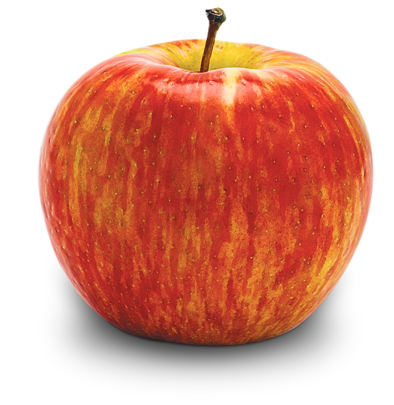

WHY WE NEED TO COMBINE COLOR?
Color brings feelings.
Some results show that, regarding color, we need 90 seconds to make a decision about what product we bought, because of the way color makes us feel about the product or something else.
Harmony colors.
When talking about color, what we need to know is how to create harmony with it, and that demands the study of chromatic color science. Look below; these colors we used for the website have harmony.
We're going to take this apple, for example, and extract all the color it has.

These colors have that apple example.